Troubleshooting Art Assets in CRYENGINE
In this topic, you'll find solutions to common art asset related errors in CRYENGINE. The errors are sorted according to the Digital Content Creation (DCC) tool being used.
3ds Max Errors
3ds Max Engine Errors
Converting Index Stream
CRYENGINE expects a specific vertex index format to be provided for each asset. The specific format is compile-time selectable, it's either 16-bit or 32-bit (see vtx_idx in ProjectDefines.h), this would be considered the "Native" format, according to the engine.
To call any geometry or render-related function that expects the native format as its input you need to provide data in the native format. Mesh files (.cgf, for example) can store data in both native and non-native formats. If the data in a mesh file is stored in non-native format, then the engine needs to convert them to native format every time we load the mesh. This process takes time and might increase memory fragmentation, so it's important to let user know that the data in a mesh are non-native by showing this warning.
In 99% of cases it happens when the build system is configured incorrectly, for example vertexindexformat is not used for RC calls.
After Making Changes to a CDF it Fails to Save
The Character Definition File is saved as normal, but when you reopen or reload it, it looks unchanged. This is because CDFs are cached the first time you open them, and no matter what changes you make, you will not see them until you completely close and reopen not just Character Editor, but the Editor itself.
Failed to Load Character File
Warning: Failed to Load Character file
Warning:... caused by file 'objects/characters/human/us/officer/hands.chr'
This is a pretty ambiguous error usually stemming from the fact that the file does not exist in the path a CDF was looking for. In the case above, someone has moved the hands.chr from the path in the error to the Objects\Characters\Human\Hands directory without updating the CDF. When looking for these files, using Total Commander can help as it can search through PAK files.
Character LOD mismatch
LOD mismatch errors typically look like one of the following errors:
Warning: Character LOD mismatch. The bone number 52 is different. LOD0 Bip01 R Finger12 LOD3 Bip01 L Foot
Warning: ... caused by file 'objects/characters/heads/story/laurence_barnes/barnes.chr'
Warning: Character LOD mismatch. The bone number 53 is different. LOD0 Bip01 R Finger21 LOD3 Bip01 L Toe0
Warning: ... caused by file 'objects/characters/heads/story/laurence_barnes/barnes.chr'
Warning: Character LOD mismatch. The bone number 54 is different. LOD0 Bip01 R Finger22 LOD3 Bip01 L Heel
Warning: ... caused by file 'objects/characters/heads/story/laurence_barnes/barnes.chr'
But sometimes there is an ambiguous error like this:
Warning: Failed to Load Character, Different bone amount of LOD0 and LOD1
Warning: ... caused by file 'objects/characters/heads/story/laurence_barnes/barnes.chr'
The first thing you can do is to open the Character Editor, load the character, and check the number of bones in the "Bone Attachment" drop-down list. Do this for the LOD as well. This gives you a good idea of how many bones are lacking or extra, and allows you to compare the numbers in each character.
The Rigging Tools have a function that will compare two hierarchies from two separate Max files and tell you the elements that are different.
LOD Mismatch Error for Every Bone in the Character.
This is often because one of the LODs was exported with "Bone Sort" applied in the exporter. "Bone Sort" was created because in some cases Max reads/traverses the same hierarchy differently. This way we sort the bones on export so that it does not matter how Max reads/traverses.
Hierarchies Are Identical in 3ds Max but not in the Game.
The problem here can often be related to the Ignore Dummies flag being checked on one of the files. Remember that any hierarchy element prefixed with an underscore will not be exported, including its children.
Model Has Duplicated Joints
Warning: ... caused by file 'objects/characters/heads/story/laurence_barnes/barnes_lod1.chr'
Warning: Model objects/characters/heads/story/laurence_barnes/barnes_lod1.chr has duplicated joints Bip01 L Clavicle
Warning: Model objects/characters/heads/story/laurence_barnes/barnes_lod1.chr has duplicated joints Bip01
Warning: Model objects/characters/heads/story/laurence_barnes/barnes_lod1.chr has duplicated joints Bip01 R Finger22
This is a strange problem that can be fixed by re-exporting the model. You should never have duplicate bones unless you made a mistake naming them in 3ds Max (Max lets you have many nodes with the same name). If you have received this error while exporting a Character Studio Biped, then the file you have exported is corrupt (since there cannot be duplicated joints). Try reloading the file and re-exporting.
Model Has Wrong Orientation
Loading Character 'objects/characters/heads/story/laurence_barnes/barnes_lod1.chr'
Warning: Model has wrong orientation.
In CRYENGINE the standard is for characters to face the positive Y axis. Make sure that all characters fit this standard. Also check to make sure that the bone listed in the "Bone Export" lister is the root bone of your character and that it has no transformations applied to it. (Check that its rotation is [0,0,0])
Object with Morphs Looks Like Its Vertices Are Melting Downward on Morph Playback
This is a common problem with character heads, and the problem is in the exporter. If you have multiple objects queued up for export, or "Export File Per Node" selected, this can happen if they have a Morpher. The solution is to load each node individually and export them one by one using the "Custom Filename" flag and entering the name of the node.
Several Updates per Frame
Warning: several updates per frame: FrameID: 211df
Warning: ... caused by file 'objects/characters/human/us/nanosuit/nanosuit_us.chr'
This is an error generated by code and is not a problem with the asset. Please forward it to your Character programmer.
3ds Max General Exporter Errors
ResourceCompiler Was Not Found

Make sure that you are pointing to the RC folder in the CRYENGINE Settings.
CryExport Validation

This means that CryTools told the exporter that there was something wrong with what you are about to export. Many CryExport .obj validation warnings are reminders, reminding you that you need to use a Crytek shader instead of a Blinn, for example. This warning can usually be ignored. This error will also be displayed if you have "suppress all warnings" enabled in the CryTools Control Panel, however, you will not get any of the actual warnings. They will be displayed on the console but their dialog boxes suppressed.
3ds Max Exporting Objects Errors
No Nodes to Export

This error message is displayed if there is no mesh added in the object export list.
Skeleton Initial Positions are Missing

This error basically means that no skeleton was exported to the Resource Compiler.
The most common related problem is that you are exporting a mesh that is not skinned to bones. If it is, save your character weights, reapply Skin or Physique, and then re-export. This usually fixes the issue. If you are sure the object is set up properly, check for other objects in the same scene that share the same name.
Degenerate Textures

Degenerate Faces

Material Not Set to Crytek Shader

You will get this error if something you are exporting does not have the Crytek shader applied to it. Objects being exported into the CRYENGINE should have this shader set under "Shader Basic Parameters" in 3ds Max.
Abnormal Scale
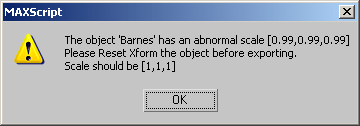
It is good practice to not export things into the game that have transformations applied to them. This warning is just a reminder. Reset Xform will solve this.
Abnormal Rotation

The abnormal scale advice also applies to abnormal rotations. You should zero out rotations on your meshes/characters before exporting them into the engine.
3DS Max Exporting Characters Errors
You have deformable vertices in 3ds Max
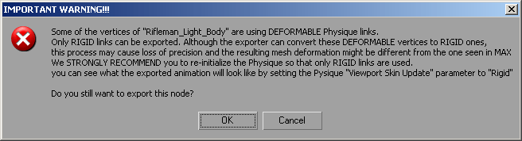
You should always try to stay away from deformable verts, but sometimes they just erroneously pop in and though the joint still has <4 links, it thinks it is deformable. Our exporter will normalize any deformable vertices, so if you really do have deformable verts with >4 links these verts will be normalized on export and may look significantly different in the engine.
It is not that a character with deformable verts will not export, merely that you should check your deformable verts to see that they have <4 links and are not in a crucial location. You should also consider unlocking them, unassigning them, and rigidly reassigning them.
Character was not exported in Figure Mode
The character has to be exported when in Figure Mode or he will have some serious weighting issues in Character Editor. The screenshots above were taken to demonstrate this.
NOTE: Remember that the first frame of the current rigging animation looks exactly like figure mode.
Delete the Shader Cache
Delete the shader cache and restart the editor. The shader cache directories are located here: User\Shaders\Cache\CGPShadersGame\Shaders\Cache\CGVShaders
Don't delete the directories, just everything in them.
3ds Max Exporting Animations Errors
Cannot Find CBA
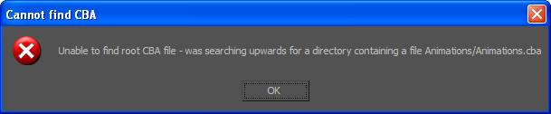
You usually get this error when you export the .caf file in a path not mentioned in the CBA file for the specific character.
To change the path, change the line <Animation Path="exported folder in animations directory"/> in the .cba file.
Also, make sure that you have an Animations.cba file in the animations directory to avoid this error.
Note: The exporter traverses upward to locate the .cba file from the exported directory.
No Bones to Export

This error message is displayed if there is no bone added in the bone export list, or if the exported bone has an underscore before its name.
Animation Export: System Cannot Find Specified File, (0) Files Converted

Maya Errors
The Cry-Maya tools feature a validation tool which will help the user find issues which could result in errors or simple confusion. Many of these have been noted below.
General errors
No Nodes
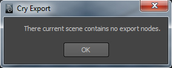

These occur when the Maya scene is missing any assets with group nodes which lack proper naming and or group nodes setup.
Validation Error

This occurs when the Maya scene does not have the desired preferences which are used in CRYENGINE. These are for the users recommendation in order to prevent further confusion in the future.
General Error

This can mean multiple things but in most cases it is because a character was not bound to a rig before export.
Please save
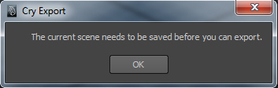
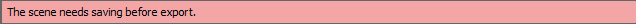
The scene must be saved before you can export.
Number of indices of node 'p'

This typically means there is geometry with vertex colors and geometry without vertex colors in the export node.
Exporting Animations Errors
Cannot Find CBA
You usually get this error when you export the .caf file in a path not mentioned in the CBA file for the specific character.
To change the path, change the line <Animation Path="exported folder in animations directory"/> in the .cba file.
Also, make sure that you have an Animations.cba file in the animations directory to avoid this error.
Note: The exporter traverses upward to locate the .cba file from the exported directory.
No Bones to Export
This error message is displayed if there is no bone added in the bone export list, or if the exported bone has an underscore before its name.
XSI Errors
These are XSI specific errors that help you debug your scene setup.
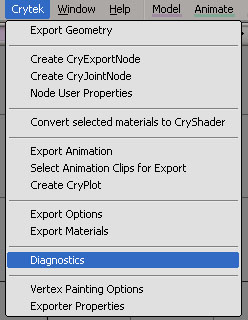
You can go to Crytek > Diagnostics and it will produce an error message if there is something wrong with your scene setup. If everything is setup OK, you will get a Diagnostics OK message!
ResourceCompiler Was Not Found
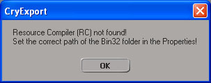
Resource Compiler (RC) not found!
Set the correct path of the Bin32 folder in the Properties!
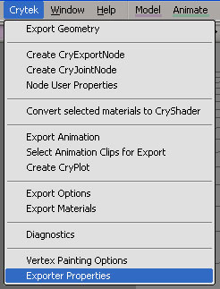
To set the right path, go to Crytek > Exporter Properties
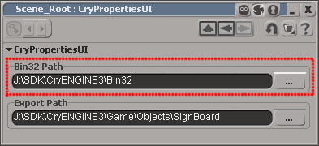
No CryExportNode found!
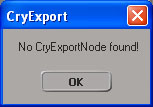
Make sure you go to Crytek > Create CryExportNode to create a CryExportNode.
Empty CryExportNode found
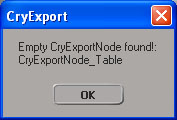
Empty CryExportNode found!: CryExportNode_NodeName
You need to have the objects you want to export as children of the CryExportNode.
Note: Any object that is NOT a child of the CryExportNode will NOT be exported.
Rename DefaultLib Material Library
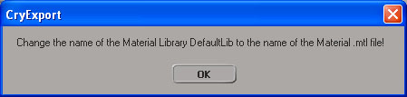
Change the name of the Material Library DefaultLib to the name of the Material .mtl file!
No CryShader on the object
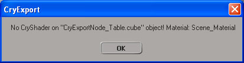
No CryShader on "CryExportNode_NodeName.MeshObject" object! Material: Scene_Material
Make sure you convert the object's material to Cryshader by selecting it and using Crytek > Convert selected materials to CryShader
Hole in MaterialIDs
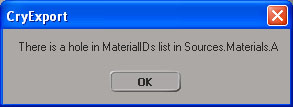
There is a hole in MaterialIDs list in Sources.Materials.materialname
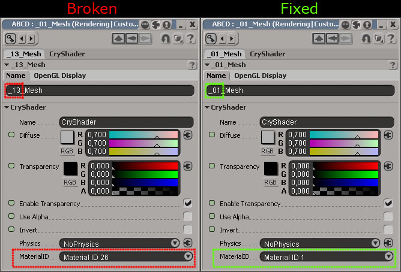
This usually happens when the prefix number in the material name does not match the Material ID. Make sure the prefix number in the name matches the Material ID number.
Note: You also need to have material in the right order. You cannot have a material ID of number 13 without having the preceding numbered materials.
Diagnostics Successful
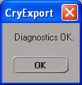
Diagnostics OK.
This is the message you should be aiming for when you hit diagnostics!